# [GIT] 用 rebase 合併分支，讓你的 Git history 更乾淨
# 你的 GIT History 是雜亂無章的地下鐵路線圖，還是一條筆直的康莊大道？
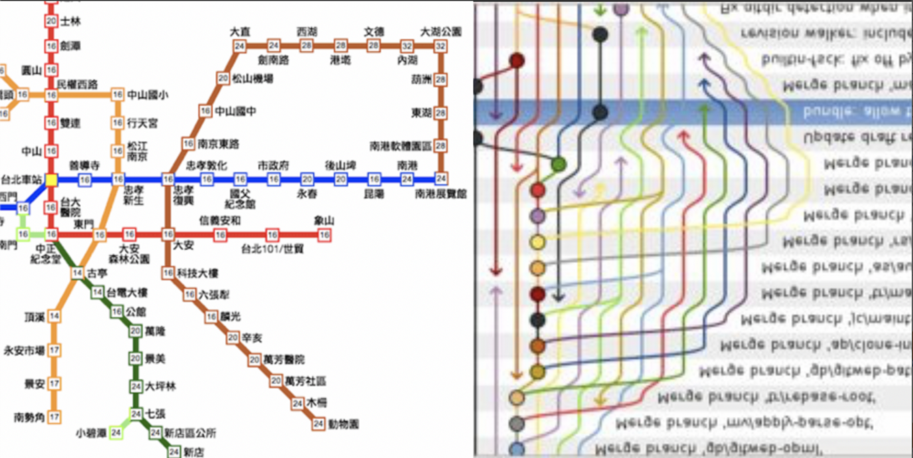
每次當看混亂的 git history 總會讓我聯想到左邊的圖
在工作中 GIT 應該已經是不可或缺的工具了。它為團隊的共同協作帶來極大的方便性，並且其版本控制的特性，使得專案的更迭變得更加安全穩固。
我想大部分的人應該都對於 GIT 並不陌生了， git merge 可能更是很多人每天都在使用的指令之一。
然而，你知道 GIT 還有一個指令叫做 git rebase 嗎？我們不僅可以使用 git rebase 合併分支，甚至可以用它來整理 branch，讓我們的 git history 變得更加乾淨。
# 使用 Merge 合併分支
假設我們今天有一個 git history graph 長成以下這樣。
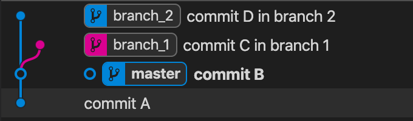
git history graph
使用 merge 合併分支的話，我們知道，會產生一個「新的 commit」來接合兩個 commit，類似如下這樣的結果。
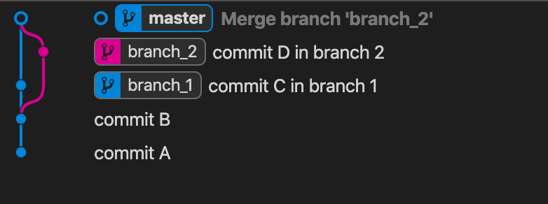
從 master 對 branch_1 與 branch_2 進行合併
這看起來沒有什麼問題，但是隨著專案的迭代，branch 越開越多、commit 越加越多，我們可以預見 commit history 肯定會像上方右邊的圖一樣，儼然是個 大眾鐵路網 。
這時候，我們就可以利用 git rebase 的特性來進行分支的合併，以此達到整理 git history 的功效。
# git rebase
git rebase 的基礎指令格式如下
1
git rebase <branch name>
其功效會對分支的基準進行重新定義。
例如：以上面 git history graph 為例，若 我在 branch_1 使用 git rebase branch_2 ，則 會以 branch_2 作為基準，將 branch_1 接在 branch_2 上方 。
如下圖所示：
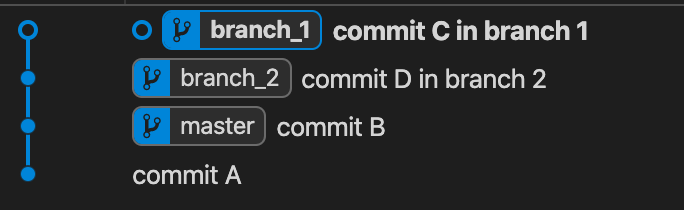
我們可以看看這個指令執行的訊息：
1
2
3
4
5
6
7$ git rebase branch_2
First, rewinding head to replay your work on top of it...
Applying: commit C in branch 1
Using index info to reconstruct a base tree...
M main.js
Falling back to patching base and 3-way merge...
Auto-merging main.js
要注意的是，如果碰到 conflict，我們一樣要手動解 conflict，並且在解完之後，使用
git rebase --continue繼續執行剩下的 rebase。這邊與git merge不同的另一點是，git merge通常 conflict 一次就可以全部解完了；然而git rebase是以commit為單位，將commit一個一個接到 branch ，因此可能會要重複解好幾次 confilct。
從上方的圖示，我們可以發現 git rebase 的結果跟 git merge 有很大的差異。感覺上 git rebase 似乎是將 branch_1 的 commit 剪下、貼上到 branch_2。
但其實並非如此。 git rebase 真正做的事情是，將 branch_1 的 commit 以 branch_2 為基準，重新計算 SHA-1 的值、並且打包一個新的 commit 物件，接上 branch_2。因此，如果你仔細檢查，可以發現兩個 commit 的 hash key 已經不一樣了，所以，比較正確的敘述應該是「複製、貼上」。
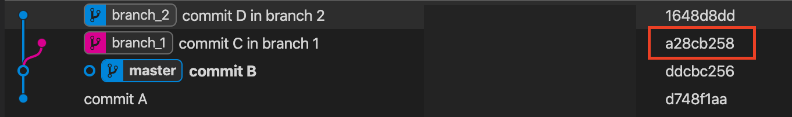
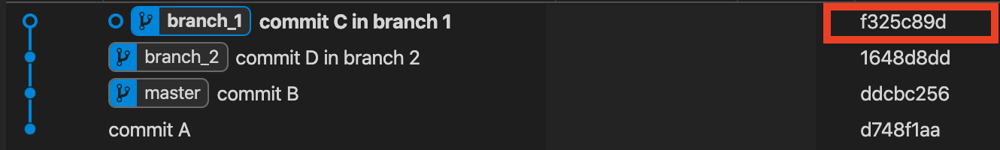
git rebase 前後，hash key 已經不一樣了
# 取消 git rebase 的結果
如果是一般的合併，我們只需要 git reset HEAD^ —-hard ，將 merge 的 commit reset 掉，就可以退回到合併前的狀態了。
但是，在 git rebase 的結果，我們如果使用這行指令，卻只能拆掉最後一個 commit，無法回到 rebase 前的狀態。那該怎麼辦呢？
其實，在 GIT 中有一個 pointer 叫做 ORIG_HEAD ，專門紀錄「危險操作」之前的 HEAD 位置。我們只要 git reaset ORIG_HEAD --hard 就可以回復到原始、合併前的狀況了。
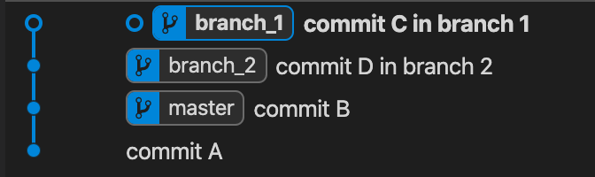
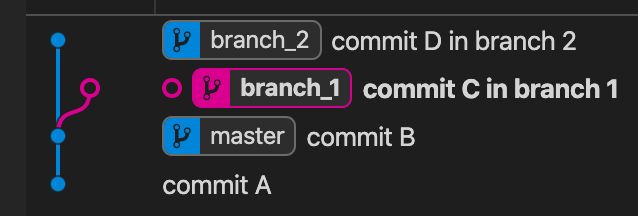
使用 git reset ORIG_HEAD --hard 可以回復到合併前的狀態
講了這麼多， 在實務上我們怎麼使用 git rebase ？
實務上，我們大多時候希望將 branch 合併到 master 中，因此我們通常會在 branch 上以 master 為基準將目前的 branch commit 接到 master。
所以，我們常常會直接使用
1
2// On any branch ...
$ git rebase master
以上面的 git 為例子，我時常會將 branch_1 、 branch_2 對 master 做 git rebase master 以追蹤最新的 master，並且確保每個 branch 的 commit 都在 master 的 forward。
之後再用 master 去 merge 這些已經在 forward 的 branch。
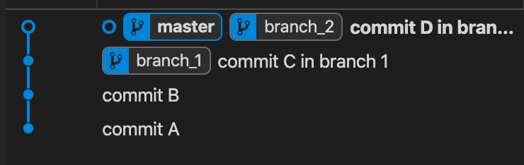
如此，就可以將整條 git history 整理成一條直線，看起來乾淨整齊。
然而，隨著業務量越來越大、branch 越開越多，我們要手動對每個 branch 追蹤當前的 master 其實有點強人所難。
因此很多人其實會選擇放爛一些 branch，等到要用時若有 conflict 再來解。
不過若 branch 的歷史與 master 差異過大，很多時候要解 conflict 可能也不是這麼輕鬆。因此我自己還是傾向「 定時讓每個 branch 都追蹤 master 的變化 」。
可是這是一個吃力不討好的工作（要手動將每個 branch 都追蹤最新的 master 著實是一個苦工），因此我自己寫了一個 「 rebase-master 」的小工具。只要在專案中使用 rebase-master 就會自動將所有的 branch 追蹤最新的 master（也可以自訂只要某幾個 branch 進行更動或不更動）。

# rebase 進階用法：git rebase --onto
在某些情況，我們可能希望將某 branch 的某幾段 commit 接到另一個 branch 中，這時我們就能夠使用 git rebase --onto 來達成我們的目的。
1
git rebase --onto <target base-commit> <commit from> [<commit to>]
git rebase --onto 可以將自訂將 <commit from> 開始的一連串 commit 嫁接到另一個 commit ( <target base-commit> ) 上面。
其中：
- <target base-commit> ： 做為基礎的 commit
- <commit from> ：要嫁接 commit 的起始點 (不包含此 commit)
- <commit to> ：要嫁接 commit 的終點 (包含此 commit)，如果未給予，則預設為 branch 的最後一個 commit。
以下圖為例
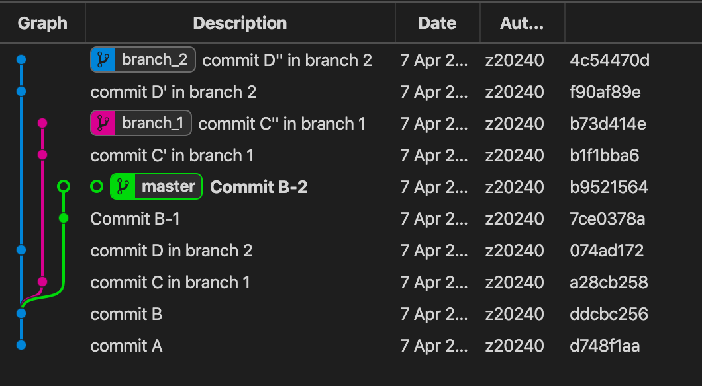
目前有三個 branch
- master ：7ce0378a、b9521564
- branch_1 ：a28cb258、b1f1bba6、b73d414e
- branch_2 ：074ad172、f90af89e、4c54470d
我希望將 branch_2 的「Commit D in branch 2 (074ad172)」至 「commit D’ in branch 2 (f90af89e)」嫁接到 「commit C’ in branch 1 (b1f1bba6)」，則我可以使用這樣的指令
1
git rebase --onto b1f1bba6 ddcbc256 f90af89e
其結果如下
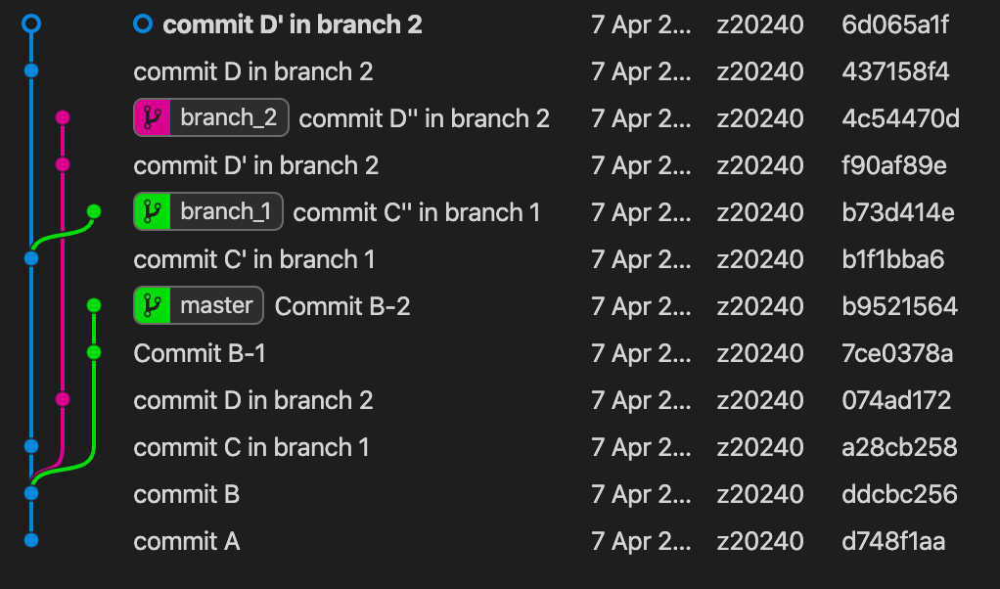
我們可以發現，的確成功將 commit 接過去了。而原本的 branch 也還是在。
另外，我們要注意的是，這樣的作法 git status 會存在於一個「非任何一個 branch 的狀態」。
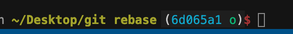
我們要自己給他一個「新的 branch name」。
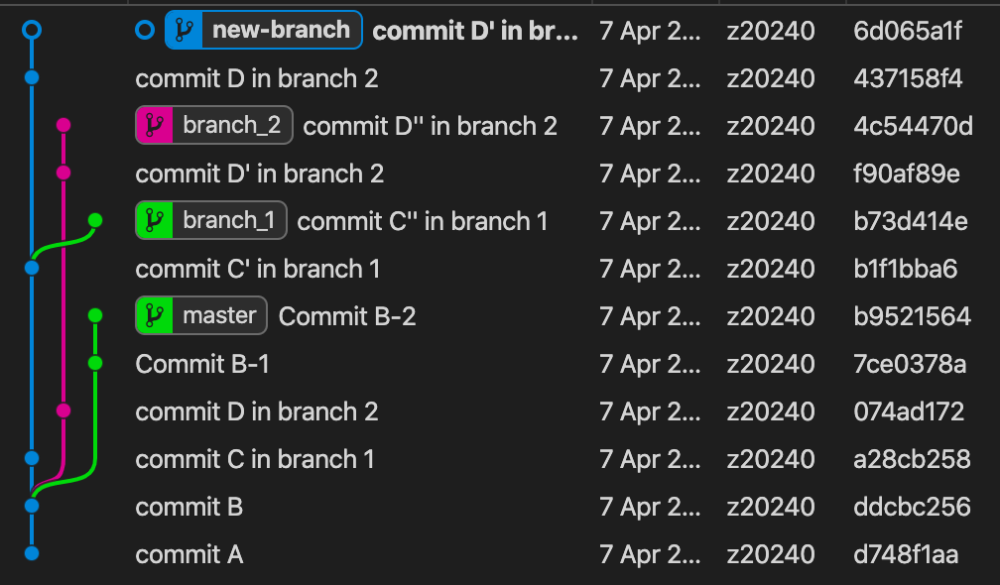
# 結論
GIT 是一個在軟體開發中不可或缺的工具。許多人可能知道如何使用 GIT，通常使用到的那些指令就能完成 80% 的工作了。
然而，若是能夠再更進階一點、多了解一點，未嘗也不是一個壞處。
# 參考資料
- 為你自己學 Git — 另一種合併方式 (使用 rebase)
- Git-rebase 小筆記
- git rebase — onto 的奇妙用法